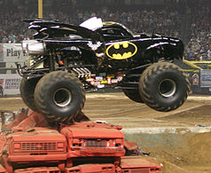

In the late 1960s, modified pickup trucks were becoming popular and the sports of mud bogging and truck pulling were gaining in popularity. Several truck owners had created lifted trucks to compete in such events, and soon competition to hold the title of "biggest truck" developed. The trucks which garnered the most national attention were Bob Chandler's Bigfoot, Everett Jasmer's USA-1, Fred Shafer and Jack Willman Sr.'s Bear Foot, and Jeff Dane's King Kong. At the time, the largest tires the trucks were running were 48 inches (1.2 m) in diameter.
